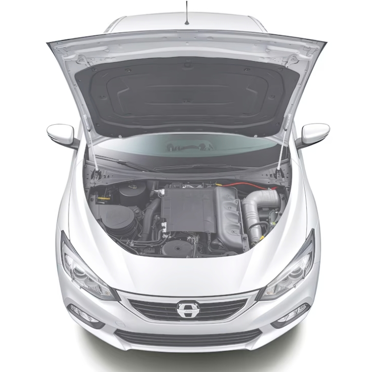

Welcome
Car Care Basics is designed for new and everyday drivers who want to understand the essentials of keeping a car safe and dependable. Small habits like checking tire pressure and fluids can prevent expensive repairs later.

Quick Links
Maintenance
Learn the basics like oil changes, filters, and simple inspections.
Tire Care
Pressure, tread depth, rotations, and alignment—explained simply.
Fluids
Know what to check and what each fluid does for your vehicle.
Quick Tips
- Check tire pressure monthly (when tires are cold).
- Check engine oil level regularly.
- Listen for unusual noises and address them early.
Helpful safety resources: NHTSA and AAA Automotive.